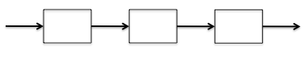

Playing the Kazoo
Yesterday, Matt Davis quoted Peter Wang as saying, "A violin is to a kazoo as Python is to Excel." To which I replied, "Exactly: anyone who wants to make music can play a kazoo right away without days of training." The difference between these two points of view lies at the heart of Software Carpentry. As I said in a post two years ago:
Suppose you have a processing pipeline with three stages:

Each stage takes one second to run; what's its overall performance? As Roger Hockney pointed out in the 1980s, that question isn't well formed. What we really need to ask is, how does its performance change [with] the size of its input? It takes 3 seconds to process one piece of data, 4 to process two…and so on. Inverting those numbers, its rate is 1/3 result per second for one piece of data, 1/2 result/sec for two, etc.:

Any pipeline's curve can be characterized by r∞, which is its performance on an infinitely large data set, and n1/2, which is how much data we have to provide to get half of that theoretical peak performance…
…twenty (!) years ago, I said that the more interesting measure…was actually p1/2, which is how many programming hours it takes to reach half of a machine's theoretical peak performance… [Software Carpentry]'s goal is to increase researchers' r∞, i.e., to help them produce new science faster. Our challenge is to minimize p1/2 so that researchers see benefits early.
In fact, our real challenge is that learners' performance over time actually looks like this:

That dip is due to Glass's Law: every innovation initially slows you down. If the dip is too deep, or if it takes too long to recover from it, most people go back to doing things the way they're used to, because that's the safest bet.
I've never met Peter Wang, but I'll bet that, like Matt Davis, he chose at some point in his career to delay gratification in order to maximize r∞. Most researchers make a different choice: they would rather get today's work done today than bang their heads against a wall for a couple of weeks until they understand a new set of tools well enough to get back to where they were.
What frustrates me is that the dip in the curve above isn't dictated by the laws of nature: it's there because programmers like me put it there. Spreadsheets don't have to be minefields for the unwary; there's no reason version control systems couldn't diff and merge the document formats used by WYSIWYG editors (see NBDiff for proof), and the inconsistencies between the hundred and one flavors of Markdown, or between the flags taken by common Unix commands, are middle fingers raised to the whole world.
Not long after writing the tweet that opened this article, Matt described a partial solution to the p1/2 problem: "If ipythonblocks is an onramp for arrays and image processing, can an equivalent be made for your favorite computational library/process?" His work, and Mike Hansen's on a novice image processing module, are proof that we can give learners an early payoff to convince them stay the course. We need more of them: if you're interested in helping to create them, please get in touch.